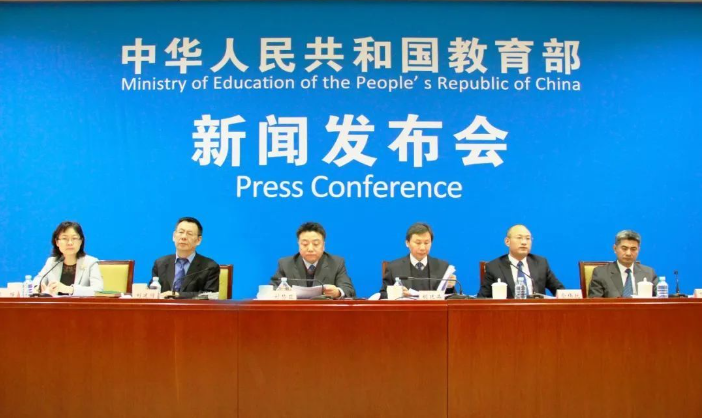
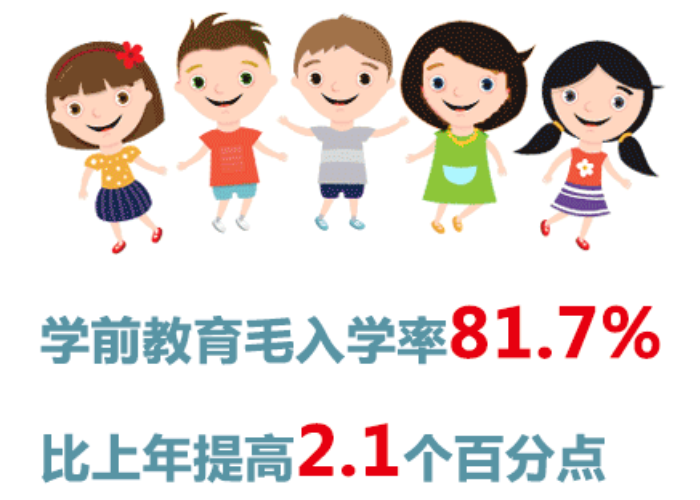

On February 26th, the Ministry of Education held the fourth spring education conference in 2019 to introduce the development of education in 2018. Liu Changya, Director of the Development Planning Department of the Ministry of Education, introduced the basic situation. Yu Weiyue, Deputy Director of the Department of Basic Education, Fan Hailin, Deputy Director of the Department of Higher Education, Hu Yanpin, Inspector of the Education Supervision Bureau, and Liu Jiantong, Inspector of the Teacher's Work Department, introduced the super-large classes and higher education respectively. Connotation development, weak school reform, and the construction of rural teachers in the new era.
Overall situation
 According to the national education statistics of 2018, the country has a total of 2018
266,700 kindergartens, an increase of 4.6% over the previous year. Among them, the number of inclusive kindergartens was 182,900, an increase of 11.14% over the previous year, and the proportion of inclusive kindergartens to the national kindergartens was 68.57%.
18,693,100 children entering the park, It was 3.82% lower than the previous year, and the number of children in the park was 46,564,200, an increase of 1.22% over the previous year. Among them, the general welfare kindergartens in the park were 34.022 million, an increase of 4.72% over the previous year, accounting for 73.07% of the total children in the park.
Kindergarten full-time teachers 2,581,400, an increase of 6.14% over the previous year. Among them, the proportion of full-time teachers who have received pre-school education is 70.94%.。
2018年
There are a total of 21.38 million schools in the compulsory education stage nationwide., down 2.33% from the previous year. The consolidation rate of nine-year compulsory education was 94.2%, an increase of 0.4 percentage points over the previous year.
Primary school stage
There are 161,800 ordinary primary schools in the country, down 3.11% from the previous year. The number of students enrolled in ordinary primary schools nationwide was 18.867 million, an increase of 5.70% over the previous year; the number of students enrolled was 103,392,500, an increase of 2.43% over the previous year. The enrollment rate of primary school graduates was 99.1%, an increase of 0.3 percentage points over the previous year.
There are a total of 6,091,900 full-time teachers in ordinary primary schools nationwide, an increase of 2.47% over the previous year; the qualification rate of full-time teachers is 99.97%; the proportion of full-time teachers with bachelor degree or above is 59.12%.
A total of 78,619,300 square meters of school buildings in ordinary primary schools (including teaching points), an increase of 3,531,700 square meters over the previous year. The proportion of schools in the country's ordinary primary school facilities and equipment is up to 88.47%, sports equipment 94.23%, music equipment 93.89%, art equipment 93.70%, mathematical natural experimental equipment 93.72%. The proportion of schools connected to the Internet was 97.82%, and the proportion of schools with psychological counseling rooms was 61.48%. The proportions were higher than the previous year.
The total number of classes in ordinary primary schools nationwide is 2,753,900., an increase of 70,200 over the previous year. Among them, the number of large classes (56 people and above) was 178,800, a decrease of 60,500 from the previous year. The proportion of large classes in the total number of classes was 6.49%, down 2.42 percentage points from the previous year.
Junior high school
There are a total of 52,000 junior high schools nationwide, an increase of 0.17% over the previous year. The number of junior high schools enrolled in the country was 1,602,900, an increase of 3.58% over the previous year; the number of students enrolled was 4,652,900, an increase of 4.74% over the previous year. The enrollment rate of junior high school graduates is 95.2%.
There are 3,369,900 full-time teachers in junior high schools nationwide., an increase of 2.54% over the previous year; the qualification rate of full-time teachers is 99.86%; the proportion of full-time teachers with bachelor degree or above is 86.22%.
The total number of school buildings in junior high schools nationwide is 643.813 million square meters, an increase of 33,613,900 square meters over the previous year. The proportion of schools equipped with junior high school facilities and equipment is up to 92.58% for sports venues, 95.91% for sports equipment, 95.45% for music equipment, 95.21% for art equipment, and 95.64% for science experimental equipment. The proportion of schools connected to the Internet was 98.96%, and the proportion of schools with psychological counseling rooms was 81.77%. The proportions were higher than the previous year.
A total of 100,100 classes in junior high schools nationwide, an increase of 52,800 over the previous year. Among them, 86,300 large classes (56 people and above), a decrease of 47,200 from the previous year, the proportion of large classes in the total number of classes was 8.62%, down 4.98 percentage points from the previous year.
High school stage
There are 24,400 schools in the national high school, down 0.76% from the previous year. The enrollment of high school education in the country was 13.52 million, down 2.20% from the previous year; the number of students enrolled was 39.312 million, down 1.00% from the previous year.
There are 13,700 schools in the national high school, an increase of 182 over the previous year; enrollment of 7,792,100, a decrease of 0.92% over the previous year; the number of students enrolled was 2,37,370, an increase of 0.03% over the previous year.
National secondary vocational education (including technical school, technical school data replaced by 2017 data) a total of 10,300 schools, 331 fewer than the previous year; enrollment of 5,594,100, a decrease of 3.95% over the previous year; the number of students enrolled was 15.518 million, down 2.55% from the previous year. The enrollment of secondary vocational education accounted for 41.37% of the enrollment in high school.
Ordinary high school full-time teachers 1,812,600, an increase of 2.18% over the previous year. The qualification rate of full-time teachers was 98.41%, an increase of 0.26 percentage points over the previous year. The number of full-time vocational education teachers was 833,300, a decrease of 0.59% over the previous year. The proportion of full-time teachers with bachelor degree or above was 92.10%, an increase of 0.52 percentage points over the previous year; the proportion of “double-type” teachers accounted for 30.65%, an increase of 0.66 percentage points over the previous year.
A total of 542,600,500 square meters of school buildings in the national high school, an increase of 2,694.31 million square meters over the previous year. The proportion of schools equipped with facilities and equipment is as follows: sports field (cafe) area is 91.77%, sports equipment is 93.84%, music equipment is 92.71%, art equipment is 92.91%, and science experimental equipment is 93.70%. The proportion of schools connected to the Internet was 98.78%, and the proportion of schools with psychological counseling rooms was 88.13%. The proportions were higher than the previous year.
There are 2663 colleges and universities nationwide(including 265 independent colleges), an increase of 32 over the previous year. Among them, 1245 undergraduate colleges, 2 more than the previous year; 1418 higher vocational (specialty) colleges, an increase of 30 over the previous year. There are also 815 postgraduate training units. The total scale of higher education in various forms is 38.33 million.
A total of 7.709 million people were enrolled in the national general college, an increase of 3.87% over the previous year. Among them, the general undergraduate enrollment was 4,221,600, an increase of 2.78% over the previous year; the general enrollment was 3,688,300, an increase of 5.16% over the previous year. There are a total of 16.9733 million students in the national general college, an increase of 3.47% over the previous year. Among them, there are 389,500 doctoral students and 2,341,700 master students.
A total of 858,800 graduate students were recruited nationwide, an increase of 6.43% over the previous year. Among them, there are 95,500 doctoral students and 762,500 master students. The number of postgraduate students was 2,731,300, an increase of 3.47% over the previous year. Among them, there are 389,500 doctoral students and 2,341,700 master students.
A total of 2,731,100 adults were enrolled in the country, an increase of 2.42% over the previous year; the number of full-time teachers in adult higher education institutions was 21,900, a decrease of 8.68% over the previous year. The proportion of graduates with higher education degrees or above is 73.65%, an increase of 1.68 percentage points over the previous year.
The building area of colleges and universities in ordinary colleges and universities is 8,669,570 square meters, an increase of 1.77% over the previous year. In addition, the non-school property building area independently used by the school is 110,229,900 square meters. The average student's average student area is 58.66 square meters; the average school building is 27.75 square meters; the average teaching and research equipment value is 15714.28 yuan. 2152 special education schools nationwide, an increase of 2.1% over the previous year. A total of 123,500 students of various forms of special education were enrolled nationwide, an increase of 11.43% over the previous year; the number of students enrolled was 665,900, an increase of 15.05% over the previous year. Among them, there were 3,316 students enrolled in special education classes, which accounted for special education students. The proportion is 0.50%; the number of students enrolled in the class is 329,100, accounting for 116,400 students in special education, and the proportion of students attending special education is 17.48%.
2152 special education schools nationwide, an increase of 2.1% over the previous year. A total of 123,500 students of various forms of special education were enrolled nationwide, an increase of 11.43% over the previous year; the number of students enrolled was 665,900, an increase of 15.05% over the previous year. Among them, there were 3,316 students enrolled in special education classes, which accounted for special education students. The proportion is 0.50%; the number of students enrolled in the class is 329,100, accounting for 116,400 students in special education, and the proportion of students attending special education is 17.48%.
National special education schools have a total of 58,700 full-time teachers, an increase of 4.78% over the previous year. The proportion of full-time teachers trained in special education was 75.65%, an increase of 2.32 percentage points over the previous year. There are 183,500 private schools of all types and at all levels across the country, It accounts for 35.35% of the national total; 53.782 million students of all types are enrolled, accounting for 19.51% of the national total.
Private kindergartens of 165,800, Compared with the previous year, it increased by 5,407, accounting for 62.16% of the national total; in the park, the number of children was 26,397,800, an increase of 2.62% over the previous year, accounting for 56.69% of the national total.
6179 private primary schools, Compared with the previous year, it increased by 72, accounting for 3.82% of the national total; the number of students in the school was 8,845,700, an increase of 8.65% over the previous year, accounting for 8.56% of the national total.
Private junior high school 5462, Compared with the previous year, it increased by 185, accounting for 10.51% of the national total; the number of students in the school was 6,633,300, an increase of 10.15% over the previous year, accounting for 13.68% of the national total.
Private ordinary high school 3216, Compared with the previous year, it increased by 214, accounting for 23.41% of the national total; the number of students in school was 3.282 million, an increase of 7.19% over the previous year, accounting for 13.82% of the national total.
Private secondary vocational schools in 1993 (excluding technical school data), Compared with the previous year, it decreased by 76, accounting for 25.39% of the national total; the number of students in school was 2,097,700, an increase of 6.27% over the previous year, accounting for 17.28% of the national total.
749 private colleges and universities (including 265 independent colleges), 3 more than the previous year, accounting for 28.13% of the national total. The average number of undergraduate students was 6,496,600, an increase of 3.36% over the previous year, accounting for 22.95% of the national total. The master's degree is 1490.
Source: Weiyan Education